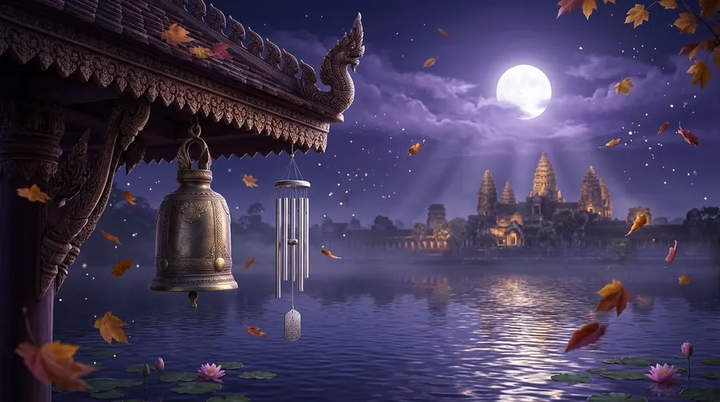

The Five Elements
The Metal Element: Meaning, Years and Personality in the Chinese Zodiac
Metal is one of the five elements of Chinese tradition, alongside Wood, Fire, Earth and Water. Here is what Metal stands for, which birth years belong to it, and how it works with the other four elements.

What Metal means
Think of a temple bell ringing clearly across a still morning, or a well-made knife: hard, precise and shaped with care. Metal is the element of autumn, when the harvest is gathered, things are sorted and what is not needed is cut away. Its qualities are clarity, structure and strength that has been refined.
In Chinese the five elements are called wuxing, and Metal is jin. As Wikipedia's article on wuxing notes, the word was first translated into English as the Five Elements, but the idea is less about physical substances than about processes and change. That is why some scholars prefer translations such as five phases or five agents. Metal is best understood as a stage in a cycle, a kind of energy, rather than only a material.
Metal at a glance
Traditional Chinese cosmology links each element with a season, a direction, a colour and more. The New World Encyclopedia lists these correspondences for Metal:
- Season: autumn
- Direction: west
- Colour: white
- Planet: Venus
- Heavenly creature: the White Tiger
- Climate: dry
- Heavenly Stems: Geng (yang) and Xin (yin)

Metal years
Every Chinese year is named by pairing one of ten Heavenly Stems with one of twelve Earthly Branches, the system the Hong Kong Observatory describes in its guide to the stems and branches. The branch gives the year's animal; the stem gives its element. Two stems belong to Metal: Geng, the yang form, and Xin, the yin form, as the table of stems in Wikipedia's article on the sexagenary cycle shows.
Because the ten stems repeat every ten years, each element covers two years in a row, once a decade. Wikipedia notes that 1984 was a Jia-zi year, the start of the present sixty-year cycle; counting from there gives a simple rule: Metal years end in 0 or 1. These are the Metal years from 1944 to 2035:
- 1950 Metal Tiger (Geng, yang)
- 1951 Metal Rabbit (Xin, yin)
- 1960 Metal Rat (Geng, yang)
- 1961 Metal Ox (Xin, yin)
- 1970 Metal Dog (Geng, yang)
- 1971 Metal Pig (Xin, yin)
- 1980 Metal Monkey (Geng, yang)
- 1981 Metal Rooster (Xin, yin)
- 1990 Metal Horse (Geng, yang)
- 1991 Metal Goat (Xin, yin)
- 2000 Metal Dragon (Geng, yang)
- 2001 Metal Snake (Xin, yin)
- 2010 Metal Tiger (Geng, yang)
- 2011 Metal Rabbit (Xin, yin)
- 2020 Metal Rat (Geng, yang)
- 2021 Metal Ox (Xin, yin)
- 2030 Metal Dog (Geng, yang)
- 2031 Metal Pig (Xin, yin)
The most recent Metal years were 2020 and 2021 (the Metal Rat and the Metal Ox), and the next ones are 2030 and 2031 (the Metal Dog and the Metal Pig).
One important detail: the Chinese year starts at Chinese New Year, in late January or February, not on 1 January. Someone born in January 2020, before that year's Chinese New Year, still belongs to the previous year and its element. Our zodiac sign checker uses the exact new-year date for every year.
Yang and yin Metal
Each element appears twice in the cycle, once in a yang form and once in a yin form. Geng years are yang Metal, and they always fall on yang animals (Rat, Tiger, Dragon, Horse, Monkey and Dog). Xin years are yin Metal, and they always fall on yin animals (Ox, Rabbit, Snake, Goat, Rooster and Pig). In the list above, the years ending in 0 are yang and the years ending in 1 are yin.
Yang is traditionally the more outward, active side and yin the more inward, receptive side. Neither is better than the other: both are needed, and every element moves between them.
How Metal works with the other elements
The five elements are linked by two traditional cycles, which the New World Encyclopedia and Wikipedia both describe. In the generating cycle, each element feeds the next: Wood feeds Fire, Fire creates Earth, Earth bears Metal, Metal carries Water and Water nourishes Wood. In the overcoming cycle, each element keeps another in check: Wood parts Earth, Earth absorbs Water, Water quenches Fire, Fire melts Metal and Metal chops Wood. For Metal, that means:
- Earth supports Metal: Earth bears Metal, as ores and minerals form inside the ground.
- Metal supports Water: Metal carries Water, as dew gathers on a cool metal surface or a bucket holds water.
- Fire restrains Metal: Fire melts Metal, as a forge softens iron so it can be shaped.
- Metal restrains Wood: Metal chops Wood, as an axe fells a tree.
In compatibility readings, elements that follow each other in the generating cycle are traditionally said to support each other, and those linked by the overcoming cycle are said to need more balance. Our five elements guide shows both cycles for all five elements, and the compatibility calculator compares the signs of any two birth dates.
The Metal personality
In our readings on this site, the Metal element describes a style of energy that colours a person's zodiac sign. We describe it like this: Metal is the element of the blade and the bell: sharp, resonant, and unwilling to bend. People born in a Metal year tend to know exactly what they stand for, and they rarely compromise on it once a decision is made. This gives them a quiet, formidable strength in negotiation and leadership. It can also read as rigidity to people who move more fluidly, so Metal personalities often do best when they consciously practice flexibility.
Remember that the element is only one part of a traditional reading, alongside the animal, yin or yang, and in fuller readings the month, day and hour of birth. Two people with the same element can be very different, and the zodiac is a cultural tradition for reflection and fun, not a scientific test of character.
Living with Metal energy
Whatever your own element, traditional advice uses Metal as a reminder of certain qualities:
- Clear and sort: autumn is Metal's season, so traditional advice links it with organising, finishing and letting go of what no longer helps.
- Keep your word: Metal's strength is principle and follow-through.
- Practise flexibility: even a strong blade needs to be handled gently.
To find your own element and animal from your birth date, use our zodiac sign checker, and see how each day's animal affects your sign in the daily fortune.
Frequently asked questions
Which years are Metal years in the Chinese zodiac?
Years ending in 0 or 1, for example 2010, 2011, 2030 and 2031. The year starts at Chinese New Year, so January and early February births may belong to the previous year.
What season, direction and colour go with Metal?
Traditionally Metal goes with autumn, west and white.
Which element supports Metal?
Earth, in the generating cycle: Earth bears Metal, as ores and minerals form inside the ground. Metal in turn supports Water.
Is my element the same as my zodiac animal?
No. Your animal comes from the year's Earthly Branch and your element from its Heavenly Stem. Each animal can have any of the five elements, so the same animal and element combination returns only every sixty years.
Sources and further reading
- New World Encyclopedia: “Wu xing” — the generating and overcoming cycles, and the season, direction, colour, planet, heavenly creature, climate and Heavenly Stems that go with each element.
- Wikipedia: “Wuxing (Chinese philosophy)” — the meaning of wuxing as processes or phases rather than physical substances, the two cycles, and the stems that belong to each element.
- Wikipedia: “Sexagenary cycle” — the ten Heavenly Stems with their element and yin or yang, and 1984 as the Jia-zi year that began the present sixty-year cycle.
- Hong Kong Observatory: “Heavenly Stems and Earthly Branches” — the ten stems and twelve branches that name every year in the 60-year Gan-Zhi cycle.
Traditional Chinese zodiac reading for culture and entertainment, not a scientific prediction. Element correspondences follow the sources cited above.
Explore more: Five elements explained · The Wood element · The Fire element · Find your zodiac sign
← Back to the MyBirthSign Blog